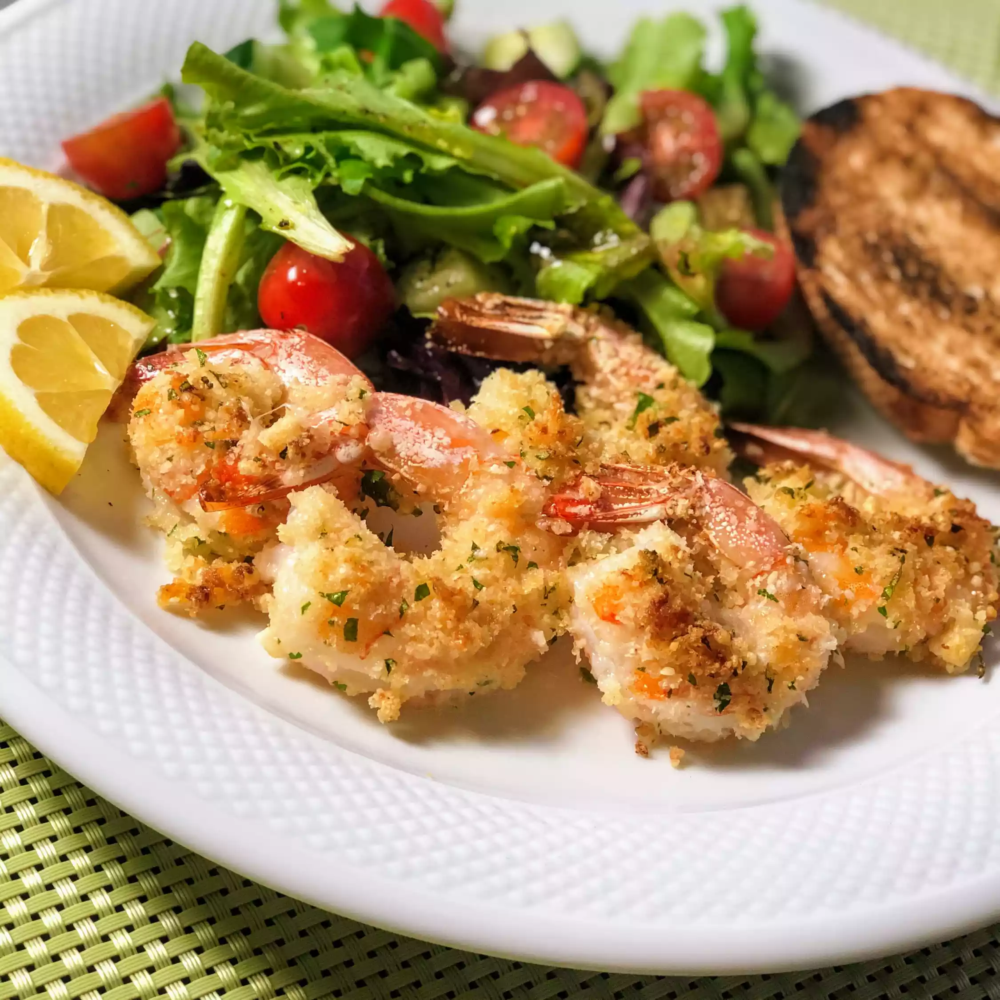

Garlic Parmesan Shrimp

Description
Delicious crispy shrimp coated in a bread crumb-Parmesan mixture. My family can't get enough of it! I would suggest doubling the recipe if you have very large eaters because this is addictive! Serve with pasta and salad.
Inggredient
- nonstick cooking spray
- 1 cup dry breadcump
- 1 cup shredded parmesan cheese
- 2 tablespoon dried parsley
- 1 1/2 teaspoon garlic powder
- 1 pound large shrimp, pelled and deveined
- 2 tablespoon butter, melted